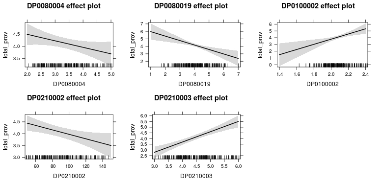

Note: This is a bit lengthy for a reason. Often data scientists post code and results with only a limited explanation of how they arrived at their models and conclusions. Here, I left in my entire thought process regarding my data analysis; from data collection to the final, “fitted” model. If you don’t want to read all of the details, this analysis can be summarized by stating, “my analysis indicates potential correlations between race, housing, and ICT infrastructure that would signify a new method by which to detect digital divide in ‘at risk’ communities…but I need more data for a better model fit!” You may now skim through and look at my pretty pictures :)
Introduction
In an age of increasingly pervasive data saturation, there are frequent obfuscations of multi-scalar, geographic issues via minimization of their symptoms within the ever-expanding distributed information and communication technology (ICT) infrastructure. Even with national monitoring, such as that conducted by the US Federal Communications Commission (FCC) of Internet access services and the US Census Bureau of computer and Internet usage, there is a lack of persistent engagement with their connection to overcoming the digital divide. Digital divide is roughly defined as the disparity between different demographic scales and spaces in terms of Internet access, computer and data literacy, and access to related educational curriculum. The goal of this data exploration is to expand on the connections between US Census data to ICT infrastructure access and symptoms of digital divide.
Data
Information on Internet access services at the tract level was obtained from the FCC Internet Access Services Reports (1), which conducts surveys on Internet connections over 200 kilobits per second (kbps) in at least one direction twice a year. This is done using the FCC form 477 which gathers data from the national to the census tract and zip code levels for Internet subscriptions via telephonic providers, Internet providers, and competitive local exchange carriers (CLECs) information. Ergo, this data does not reflect availability of services at various speeds, just the subscriptions at the advertised speeds in specific areas as reported by providers and CLECs. This results in categorization schema of 72 speed tiers defined through eight downstream (download) and 9 upstream (upload) ranges of speed with breakpoints at 3 megabits per second and 6 megabits per second (mbps) for downstream and with breakpoints at 768 kbps and 1.5 mbps for upstream (1). I chose to use the December 2010 tract level form of the data (2).
The racial and ownership data is gathered from the US Census Bureau’s Master Address File/Topologically Integrated Geographic Encoding and Referencing (MAF/TIGER) database with 2009 to 2013 American Community Survey (ACS) five year estimates data at the tract level (3). From this dataset, I will be using race data from the DPSF8 category for people of self-identified white, black, Asian, or other ethnicity and from the DPFS10 category for people of self-identified Hispanic/Latino ethnic origin. I will also be using data on housing tenure from the DPFS21 category regarding occupancy by owner or renter.
FCC Schema{kind=link}
Methodology and Results
For this study, I focused on the area of Hillsborough county, Florida. Both the US Census and FCC data covered this area and a substantial sample could be extracted from both datasets for this purpose. An initial challenge was taking the US Census based data and joining it to the FCC data. Though the FCC data is from a December 31, 2010 Form 477 survey, the tract identifiers in their data are based on US Census 2000 tracts information. Even with this, only 249 of 321 tracts worth of data existed for the study area. After joining the aforementioned required fields from both datasets and removing any tract having a null value, we were left with a sample of 193 tracts for this study. Due to many issues with the fields, I ultimately used information on providers of fixed high-speed connections over 200 kbps in at least one direction. This is advantageous for two reasons. First, its the lowest classification of upstream or downstream speeds in any direction making it the most inclusive and potentially most representative of the actual access service availability at the tract level. Secondly, this is focused on high-speed connections regardless of land-use identification the connection falls in. This will allow us to better understand the total availability of connections in a tract as opposed to only those connections identified and reported as consumed through residential households.
The selection of the race and housing occupancy information from the 2010 US Census, though more simple, had to be carefully considered. The ACS has such a diversity of classification tied to sub-classifications of mixed and specific groups, it was more prudent to assess major headings as delineated by the DPFS categorization. The sum of these five categories captured most of the sub-classifications and came close in many cases to the population totals per census tract. Additionally, the two fields for housing unit occupancy were classified by either renter or owner and were included for two major reasons. First, the delineation may correlate to certain types of service found in an area. Inclusion of this type of data may help explain how race may affects locations of various forms of ICT infrastructure. Second, the type of housing unit occupancy with the facet of self-identified racial categorization may elucidate the patterns of Internet access services consumed (or purchased) in a given area, by proxy giving us a potential indication of affluence for a given tract.
With our response and explanatory variables selected, the proceeding examination for required transformations revealed all eight of my variables were negatively skewed. Simple power transformations solved most of the issues giving us conditions to meet the linearity assumption for our model. To further screen the variables for any non-linearity, scatter plots were produced for each explanatory variable given our dependent. Though all showed some level of heteroscedasticity, they all fell within acceptable boundaries for variance. Spread level plots were also ran as a pre-diagnostic to identify any additional potential for significant heteroscedasticity. Though the variables for self-identified black, Asian, and other ethnicity showed higher hinge spread than that other variables, the quantile-quantile and scatter plots meet linearity criteria while keep the residuals in acceptable range.
Initial Model{kind=link}
My initial model included my two residential variables in addition to my race and household occupancy data to see if there would be any influence on the relationship between total number of fixed, high-speed connection providers and the factors of reported household connections. This resulted in a model that could explain only 27.8 percent of the variation in providers of Internet access service based the selected explanatory criteria. Despite the good fit for the census-based data, the factor of residential fixed connections seemed to have no effect on the presence of the infrastructure itself. This seems counter intuitive as one would assume access services would be provided and built based on demand for the service. However, aside from potential processing errors for the data, one has to keep in mind that the primary infrastructure may have been there for the development of a given community (e.g. the original community may have grown around infrastructure such as phone and electric utilities that now act as the guide for ICT infrastructure improvements and fiber installation). So the consumption of a given Internet access service may be tangential and/or circumstantial to the system itself.
Focusing on the US census data, we also see some interesting results. The model shows that self-identified race categories of white, black, and Asian are not significant where as those that self-identify as other or Hispanic/Latino showed significance in the fitted model. In terms of insignificant variables, white and Asian demographics showed positive slopes whereas the black or African American demographic exhibited a negative slope. For significant variables in this model, self-identified other ethnicities and household occupancy by owner shower negative influence on total Internet access service connections adjusting for other explanatory variables. Those who self-identified as Hispanic/Latino or household occupancy by renter showed positive influence adjusting for the other variables. Excluding the influence of our residential fixed connection factors, the model is telling us that there is a potential relationship between ethnicity and strong relationship between household occupancy to most inclusive categorization of fixed Internet connectivity. Looking at the coefficient plot, we can see that a second run will require removal of the residential connection factors. We also have to examine the variability and spread of the Hispanic/Latino explanatory variable.
Coefficient Plot{kind=link}
Once the factors were removed and before the model was adjusted, I examined the correlation between the explanatory variables for any potential issues of collinearity or inclusion of interactions in my final model. The visualization below helps better sort through the relationships. The diagonal is tightly bound as these are the variables correlation to themselves. We can see that there is a relatively positive link between African Americans and occupancy as renters compared to the stronger positive relationship of whites and occupancy as owners. However, the bond between African Americans and occupancy as owner (Pearson score of -0.053) and their bond to occupancy as renters (Pearson score of 0.511) suggests that removal of our previously included factors may allow this explanatory variable to become significant in our final model. The variable of Hispanic/Latino shows some level of collinearity with all other variables and this may be due to large spread level of the variable residuals to the fitted model. With the correlation plot and coefficient plot results, I would be hesitant to state that the influence exhibited by this variable is truly as direct as the model suggests.
Correlation Plot of Explanatory Variables{kind=link}
In examination of the Hispanic/Latino explanatory variable, I wanted to understand the reason behind the relatively high collinearity and the large standard error. The quantile-quantile plot for DP0100002 reveals a good fit, but when examining the scatter plot I can see that there are two observations that may be causing issues with spread and the resultant fitted lines. Observation 36 has been explored previously, but now seems to be influencing the dependent variable in the model more than it should. Due to the sparse nature of this tract and the high number of connections due to the businesses (assumed to be mostly due to GTE Financial), I decided to remove this point in order to increase linearity. I then focused on observation 118 as is is exhibiting a large influence on the relationship to the dependent variable. In this tract we have mixed land use as the southwestern part of the tract is residential and the remaining two thirds of the tract is commercial and industrial uses. The Hispanic/Latino overall population is 66.3 percent of the total tract. This would be enough compared to the other surrounding points to raise the end. However, due to my desire to keep this tract as the data is correct and it represents an exemplar of a potentially underprivileged community in need of expanding ICT access, I returned observation 36 back to the dataset and transformed the complete, original 193 observations for DP0100002 using a logit transformation. This flattened out the curve as well as reduced the residual spread.
Quantile-Quantile Plot of DP0100002 Scatter Plot of DP0100002{kind=link}
{kind=link}
I then ran my initial model through an influence index plot to identify any addition observations that may be having undue effects on the dependent variable. From these plots, there were two observations that stood out. The most interesting was observation 113. Though it did not register as significantly as the other in the Cook’s distance plot, it did show large negative trends in the Bonferroni and studentized residuals plots. Observation 113 is a tract in the northwest of Hillsborough county composed of suburban, gated communities where 97.3 percent of the population are self-identified white and 90.7 percent household occupancy by owner. The second observation, 115, was also in the northwest of Hillsborough county, is composed of suburban communities, and is a 97.1 percent self-identified white demographic with 88.6 percent household occupancy by owner. However, due to the data being correct, I left these observations in as well.
Influence Index Plot of Initial Model{kind=link}
Finally, before my final fitting for this model, I want to step through my initial model to establish any potential changes via the adjustments and transformations to my dataset. In the process of removing the least significant variable in an iterative fitting of the model, the original four significant variables remained with drastically improved p-values and reduced standard errors. The variable for black or African American was included in the model, but fell just short of the 95 percent mark. Therefore, my final fitted model will include these variables. The final model can be seen below.
Fitted Model{kind=link}
This model had a much better fit than the previous despite the variations in the multiple and adjusted R-squared values. The final model had slightly lower multiple R-Square, but an improved adjusted R-Squared. This model can account for roughly 27 percent of the variation in providers of fixed, high-speed connections over 200kbps in a least one direction per census tract in Hillsborough county. This may not seem like a very high percentage, but it does raise some very interesting questions as to why race and occupancy has an effect on ICT infrastructure and more specifically, Internet access services in a given area. After all the data engineering of both the FCC and Census datasets, it became clear that extreme outliers could have significant effects on the fit and the use of linear regression diagnostic tools helped identify and resolve these issues. Looking back to the fitted model, the variables that have consistently showed the strongest influence on the Internet access services were self-identified race as other, race as Hispanic/Latino, and both household occupancy by renter and owner. However, this may be to the collinearity between the variables themselves. For example, due to the high positive correlation between African American demographics and rental of households per tract, this may be the reason why the variable for African American fell as slightly significant between 90 and 95 percent on the model. Referring back to the correlation chart, we can see that each of the five variables has a significant positive correlation with at least two of the five variables (I would say three with the exception of the aforementioned relationship between the black demographic and rental households). If I had kept the census field for self-identified white in the model, the African American field would have dropped below any real significance level as it has a much more negative correlation to the white variable than the rental variable. The outliers mentioned above being tracts consisting of largely white, house owning people, make the effects on other groups of similar percentages, but smaller concentrations per tract, no surprise as they are subdued in the larger analysis of Hillsborough county.
Now looking at the initial plots from the final model. We can see in the residuals vs. fitted plot that the relationship between our response and explanatory variables in mostly linear. However, we also see a previously discussed outlier from our initial model and how it affects the overall fit. In addition to the heavily manipulated FCC data as response, this level of heteroscedasticity is to be expected at this scale. We also see observation 167 now as an outlier. Observation 167 is a small tract in the center of Hillsborough county near Brandon where the dominant demographic is self-identified white at 78.6 percent of the total tract population, but with an approximately even split between household ownership and rentals. Even though this observation is an outlier in terms of hat-values and studentized residual, it still does not have enough leverage to heavily influence the model. This can be seen in the quantile-quantile plot as the distribution of providers of fixed, high-speed connections given race and household occupancy type shows a good fit. There appears to a bit more spread and heteroscedasticity towards the upper limits of the fit, but it is not enough to dismiss the model alone.
Residuals vs. Fitted Plot of Fitted Model Quantile-Quantile Plot of Fitted Model{kind=link}
{kind=link}
Examination of the scale-location or spread level plot shows us that despite the previously mentioned effects of residual variance, model still maintains relatively good linearity. The leverage plot for the residuals reinforces this sentiment as the non-constant variance is minimal and relative linearity is maintained. Perhaps slight adjustments are called for, but given our examination of the outliers in the final fitted model, our data is relatively set. Within three of the four basic plots for this model (residual vs. fitted, spread level, and leverage) there are patterns in the data that may appear odd at first. In the process of preparing the data, the before state and post-transformation state of the response variable has similar striation-like patterns. This is due to the method of data classification used by the FCC for the Internet access services report. As mentioned earlier, the value of “1” in the dataset stands for “1 to 3” with the next largest actual number in the data being “4”. This gap in the data has strange effect of stratifying the model residuals based on how they interacted below and above this gap. The result is the pattern we see distinctly in the residuals vs. fitted plot and the spread level plot (this plot being the square root of the absolute values found in the residuals vs. fitted plot). This should not affect the analytic assessments made from the model at its calculated percentage of interaction, but it is a consideration nonetheless.
Scale-Location (Spread Level) Plot of Fitted Model Leverage Plot of Fitted Model{kind=link}
{kind=link}
Looking at the effects plot below, we can now start to analyze the model while taking into account the above observations. The previously discussed marginality of the black or African American field in relationship to the response variable is highlighted not only by the negative slope, but with a residual spread just slightly less than the target second standard deviation. However, we can still assume that as the number of providers of Internet access services with fixed, high-speed connections increase in an area, there will be a decreased presence of African Americans at the tract level. It can be assumed much more securely that a similar trend will occur with people who self-identify as another ethnicity (DP0080019) than those in my preliminary model. As the number of Internet access service providers increase in a census tract, the overall number of other ethnic minorities will decrease. However, the opposite trend is seen with populations of Hispanic/Latino people. It can be assumed within the confines of this model that as Internet access service providers increase for a given tract, the number of Hispanic/Latino peoples with increase in that same area.
If this is true, then we can say of the demographic groups we have examined based on race, Hispanic/Latino communities are the least likely to suffer from the effects of digital divide in the larger Hillsborough county area as compared to African American and other minority groups. We do have to take into account the large spread on the lower portion of the fitted model’s distribution for the Hispanic/Latino variable, but removal of observation 36 would more than likely make the fit a bit tighter and reinforce the validity of the assessment.
This begs the question as to how or why those who self-identified as white or Asian did not attain significance in this model. My initial model showed quite large p-values for these specific criteria given the same response variable. One potential reason is distribution of white and Asian populations in Hillsborough county. As we have seen above, the two types of outliers most commonly seen have been sparse counts of any significant people per tract (such as observation 36) and high concentrations of white people as the dominant demographic within a census tract. The same could be said for dispersion of Asian communities of varying size as they are more likely to experience inclusion into any area, but with a footprint smaller than those of other larger groups. In this study, only 5 out of 321 census tracts had concentrations of self-identified Asians greater than 678 and all these tracts are in the north and northwest of Hillsborough county (most tracts with concentrations of Asian citizens higher than 76 are in the northwest of the county). Compare this the 263 census tracts with concentrations of self-identified white persons greater than 1231 and we can see the opposite sides of this very uneven scale (the maximum number in any tract of a self-identified Asian households is 1102). In both cases, additional data, such as that of income and land-use, could draw out the correlations between self-identified white and Asian households to the larger Internet access service providers model.
2010 US Census DP0080006 Population, Hillsborough County 2010 US Census DP0080003 Population, Hillsborough County 2010 US Census Comparison of Population Numbers - Asian and White per Census Tract{kind=link}
{kind=link}
{kind=link}
In terms of housing, assumptions using both owner-based and rental-based variables are stronger than assumptions tied to race as their influence on the response variable is statistically higher. In the case of the variable for household occupancy by owner, we can say that as as Internet access service providers of connection speeds of 200 kbps in at least one direction increases, the number of household occupancy by owners will potentially decrease. The opposite can be assumed of household occupancy by renters as their numbers will potentially increase with an increase in access service providers. That being said, we can be a bit more sure about the latter assessment than the former due the spread of residuals around the fitted line. This reinforces not only the previous assertion about inclusion of income data, but also the need to examine the percentage of type of land-use as a categorical variable in determining which type of provider connection is significant to a particular type of use. Despite the strength of these assumptions in comparison to those of race, the varying states of collinearity between these variables means there is a certain level of bonding between one or more of the explanatory variables of both race and occupancy.
 Effects Plot of Explanatory Variables{kind=link}
Intermediate Conclusions
In consideration of the above examination, it would be very hard to make an inference for the whole of Hillsborough county based on this limited explanatory model. This is more so due to the manner in which the FCC data was formatted and classified. This made the fitting of a linear regression model to any of the six data fields extremely difficult. In attempts to fit this same data within a generalized linear model, the response variables categorized into distinct factor levels resulted in fitted models of lower R-squared values than my final linear model. This suggests that there may be some data quality issues on the part of the FCC or the data they do release may be limited. However, if this data is a limited release, there is no note of it in their documentation for the Form 477 biannual reports. The primary issues with the form as the means of collection are initially two fold. First, the manner in which the form is handled falls in the realm of suggested compliance on the part of fixed and mobile Internet and telephonic access service providers. This would suggest that not only is the process a minimally mandatory process on the part of the submitter, but accuracy and precision in the data itself is not given proper incentive by the FCC and therefore could reflect a desired representation of providers’ service offerings as opposed to actual availability of access. In the case of mobile high-speed Internet, we already know this to be the case.
Secondly, the FCC, per agency mission and directive, has an incentive to show growth as this is directly tied to not only their tax-based funding, but licensing of spectrum and infrastructure by the service providers themselves. Ergo, there is potential to inflate the actual numbers to show growth in both fixed and mobile, high-speed Internet access for consumer-based applications. This could potentially explain why provider based information per census tract for 1 to 3 providers is just recorded as “1”. The only reference to this in the 88 page report for this data is the manner in which they classify their choropleth maps into 4 classes (one of which is zero). By using four classes in your choropleth, the map designer has made a choice to obscure the areas with less than three Internet access services, fixed and/or mobile, with little to no information on the quality of those classes of service aside from upstream and downstream speeds. The same can be said for residential connection per 1000 households. These numbers reflect the count and type of service per unit, placed into 6 classes (on of which is zero), which results in the obfuscation of areas with less than 200,000 service consumers. Both of these points can potentially result in the neglect and erasure of communities who through no fault of their own, have been geographically disadvantaged in terms of ICT infrastructure and Internet service access.
The census data was far more malleable and fell into normal distributions with relative ease. The question of outliers was addressed and though there were discrepancies to address, all observations were verifiable and were confirmed through GIS analysis of the census tracts in question. As pointed out, some outlier issues resulted from sometimes extreme ranges in the explanatory variable values and because of this, outliers were fixed through reprocessing, but often resulted in new outliers. This resulted in a minimalist approach to transformation and outlier culling. This was the same for all US Census data fields considered for this model. Additional care was taken in independent variable selection for the final model and was not solely based on iterative processing of the model. This entailed ensuring that no two variables represented the same data in either race or household occupancy. This resulted in relatively normal distributed dataset for the final model. This was not to say that there were no unusual observations.
Referring back to the disparity the emerged when white and Asian ethnicities, this observation was made when examining how, after each iteration of outlier assessment and data processing, new outliers emerged based on comparative criteria. The two most persistent trends were census tracts with high density of self-identified white households and census tracts with barely any households. This simultaneously signaled the information gap regarding the Asian variable in my analysis and not only did it not have significant influence on the response variable, it barely had any influence on any other variable in the model. An examination of its correlations shows that the white and Asian explanatory variables had relatively higher correlations than the other variables. Due to the lack of income or land-use data for this study, the unusual observations of both variables could not be resolved and the attempt to use occupancy as a proxy for income (though highly significant in the case of the model) could not be manipulated or leveraged to normalized either variable.
The focus of this model was to determine effects of digital divide down to the systemic levels of ICT infrastructure. This means that much like electricity or telephones in the early 1900’s, some people had a geographic advantage based on their collocation with the infrastructure and were able to coeval their human geographies with this technology. Keying on this ensured that a focus on historical divides based on race and economic factors would in someway potentially indicate a divide in technological access. The fitted model in this study is a good start and the variables used in the model fit well, but require additional data layers to make it truly usable in larger, inferential manner.
I avoided interaction for this study as I didn’t want to convolute the raw interactions between racial variables and occupancy. These were loosely collinear to begin with and the correlation plot further supported this assumption. However, income and land-use data combined with race and domicile-based data would require interactions between race and income, income and household facets, income and land-use, and land-use, income, and race. In order to make this function, I would have to adopt the multi-scalar model used by Chakraborty and Bosman in their 2005 paper (4). Careful sampling techniques with applied and fitted models at the national, state, and local level would help make the assumption of these interaction much more robust. Aside from the addition of these two data facets, an additional spatial aspect would have to be added as well to the model to make my overarching purpose achievable.
The only spatial reference in this the census tract. However, the FCC (not the providers) have made a huge error in assuming services of the ICT sort can be generalized to the tract or polygon level. As we have discussed with the work Riddlesden and Singleton (5), different locations can be disadvantaged or bottlenecked at different times throughout a day (sometimes in the period of a few minutes). In order for us to truly make sense of the FCC’s data and to truly determine whether or not a location has adequate access to Internet services, a model has to be built to audit key points in the ICT infrastructure between the service provider and consumer that provides the actual trends in mean speeds along this route for all provider access points in a given tract. This would then be compared to seasonal, spatio-temporal trends of the aforementioned variable categories (race, domicile, income, land-use) to give the best indication of digital division between communities in a multi-scalar methodology.
Internet access service providers are already more than aware the system monitoring portion of this model concept and as of recent have been leveraging machine learning, in much the same way big on-line marketing firms and social media outlet, to target future consumer markets and keep locations for infrastructure expansion based on billable potential, not the need of underprivileged communities further falling victim to the digital divide.
Future Work
In the course of this study, there were many large assumptions made despite the relatively low percentage of variation in Internet access service providers that could be attributed to the model in its final form. This is due to many factors, from potential data processing errors to inclusion of variables with slightly higher influence and/or leverage than should have remained. However, there are several facets of this study that will be addressed in later research efforts.
One such issue is the data structure provided by the FCC via their form 477 collection and analysis efforts. The data existing in either classified or semi-classified states creates extreme difficulty when attempting to infer relationships beyond the confines of a limited, explanatory linear model. Even when attempting one’s own categorization of the data, one is still talking about data that comes in from discrete counts at the selected area level. Despite the extremely well documented processes and reports on the part of the FCC, a minimal provenance for the data does not ensure that secondary use of this data (as is) will result in any level of reproducibility calling into question the validity of their initial analytic efforts.
In the case of outlier accountability, there was not a high level of variance in either the FCC or US Census datasets. However, when their were outliers, they did exhibit a moderate amount of influence and/or leverage on the fitted model, both in terms of their specific relationship to the response variable and their correlation to other explanatory variables. In the case of the US Census fields for self-identified white and self-identified Asian households, it made the difference between significance and complete exclusion from the model. This, in addition to the low R-squared, points to the requirement for additional data in the model in order to further verify the exclusion or to correlate these variables to some level of significance if any exists.
One such dataset required for continued analysis on digital divide is income data (at the tract level for this study). This, in addition to US Census computer and Internet use data, would not only allow an assessment as to how affluence affects ability to connect to the ICT infrastructure, but further delineated how many people cannot. As we saw with this study, it would be a stretch to assume household occupancy by owner or renter is an adequate indicator of the individual households ability to afford connection via Internet access services or at all using some form of ICT-based device (e.g. laptop computer or mobile device). Another dataset related to this study is land-use data. As many of the FCC data fields were noted as residential in nature, this would allow us to move from knowing what Internet access services are available in an area, but also what level of infrastructure could be reallocated for communities who are overt victims of digital divide. This could be as simple as identification of a few, high-speed connections as a base for a self-healing mesh network with the cost distributed across a given community.
This draws on a bigger point that as time progresses and technology becomes cheaper and more ubiquitous, the very definition of digital divide must be updated to reflect newer realities. Just because someone has a laptop and/or smart phone does not mean they are any more capable of understanding how they work, let alone enable them to obtain a higher quality of data or understanding of its context. Looking to recent works such as that of Graham, Straumann, and Hogan (6), we can see even equal access does not equate to equal representation, exposure, or greater overall access to unique, localized information and insight. Studies such as this would provide an expansion to a foundation effort to geographically explore and apply strategic avenues by which to remedy digital divide. This goes beyond giving children tablets towards identifying gaps in education and persistent accessibility.
A path ahead would be to further verify previous works examining digital divide both in terms of methodology and data used. This would give me a better footing regarding digital divide studies and GIScience-based studies. For my specific studies, this analysis layered with multi-scalar verification of previous research will go a way in showing the distinct nature of digital divides in human and cyber geographies.
This work is licensed under a Creative Commons Attribution-NonCommercial-ShareAlike 4.0 International License.
References
-
United States Federal Communications Commission (2011). Internet Access Services: Status as of December 31, 2010. Washington D.C.: Industry Analysis and Technology Division Wireline Competition Bureau.
United States Federal Communications Commission (2015). Census Tract Data on Internet Access Services from December 2010 [Data file]. Retrieved from https://www.fcc.gov/Bureaus/Common_Carrier/Reports/FCC-State_Link/IAD/csv_tractdata_dec_2010.zip
United States Census Bureau (2010). TIGER/Line® with Selected Demographic and Economic Data [Data file]. Retrieved from http://www2.census.gov/geo/tiger/TIGER2010DP1/Tract_2010Census_DP1.zip
Chakraborty, J., & Bosman, M. M. (2005). Measuring the digital divide in the United States: Race, income, and personal computer ownership. Professional Geographer, 57(3), 395–410.
Riddlesden, D., & Singleton, A. D. (2014). Broadband speed equity: A new digital divide?. Applied Geography, 52(2014), 25–33.
Graham, M., Straumann, R.K., Hogan, B. (2015). Digital Divisions of Labor and Informational Magnetism: Mapping Participation in Wikipedia, Annals of the Association of American Geographers, 105:6, 1158–1178.